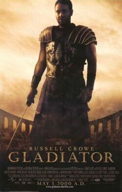

Bazı tarihçiler Büyük Tren Soygunu (1903) 'ün ilk aksiyon filmi olduğunu düşünüyor. 1920'ler ve 1930'lar boyunca, aksiyon temelli filmler genellikle Douglas Fairbanks gibi aktörlerin dönem parçaları veya Western filmlerinde kılıç kullandıkları " gösterişli " macera filmleriydi .

Gladyatör, yönetmenliğini Ridley Scott'ın, senaristliğini David Franzoni, John Logan ve William Nicholson'ın yaptığı 2000 yılı İngiliz–Amerikan ortak yapımı epik ve tarihsel drama temalı film. DreamWorks Pictures ve Universal Pictures'ın ortaklaşa yayımladıkları bir filmdir. Oyuncular, başroller Russell Crowe ve Joaquin Phoenix; Connie Nielsen, Ralf Möller, Oliver Reed (son rolünde), Djimon Hounsou, Derek Jacobi, John Shrapnel ve Richard Harris'tir. Filmde Russell Crowe, babası İmparator Marcus Aurelius'u boğarak öldüren Commodus'un düşmanlığını kazanan Romalı general Maximus Decimus Meridius'u canlandırmaktadır.
Filmin Yönetmeni : Ridley Scott
IMDB PUANI : 8.5
Oyuncular :